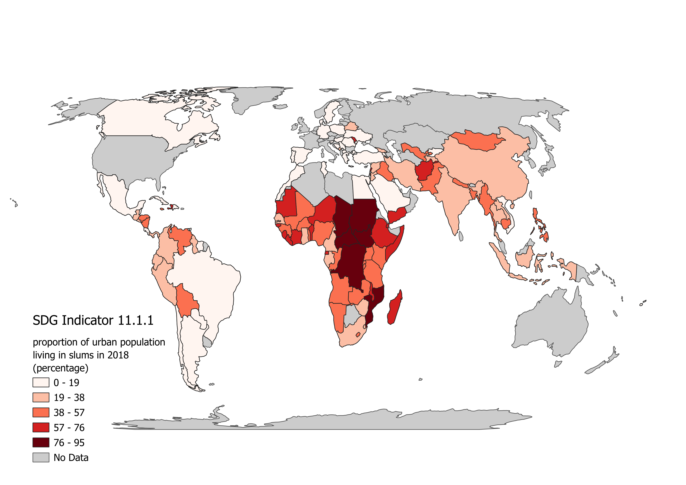

Choropleth Map
Below you can view an interactive map of SDG indicator 11.1.1 (on the left), which I created using publicly available SDG data found through the UN database. This can be compared to SDG indicator 3.1.2 (on the right) found in the ESRI-online database. Indicator 11.1.1 depicts the proportion of urban populations living in slums, while indicator 3.1.2 shows the percentage of women of childbearing age within 2 hours of a health facility. When clicking on specific regions, a popup depicts the value of the indicator for that specific region.
explaining choropleth in general...
introducing the image with equal area
